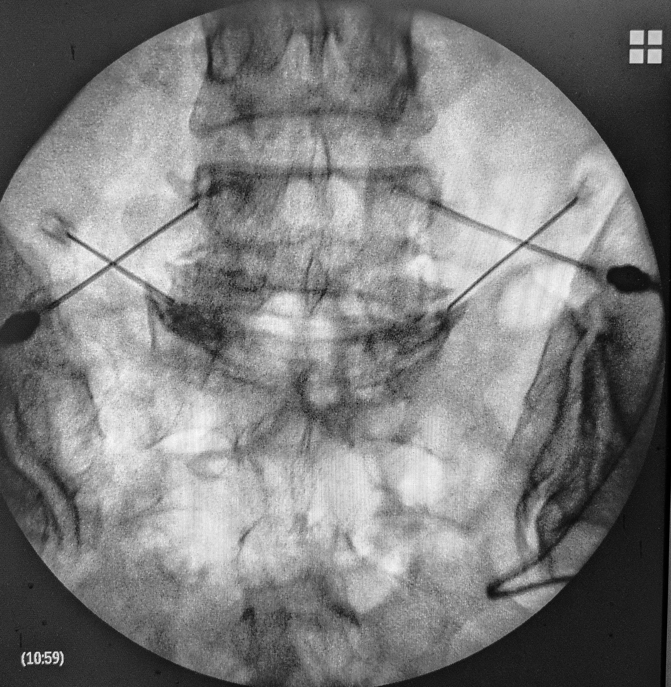

Что такое радиочастотная денервация?

Радиочастотная денервация - это минимально инвазивная процедура, которая помогает снять хроническую боль в спине и шее.
Процедура денервации прерывает болевой сигнал, возникающий из-за нервов вокруг межпозвонковых суставов позвоночника. У пациентов облегчается боль в позвоночнике за счет удаления небольшого участка нервных волокон при помощи тока высокой частоты.
В каких случаях проводят радиочастотную денервацию?
Цели лечения с помощью денервации заключаются в следующем:
- Уменьшение боли в шее или спине на длительные периоды времени, обычно более 6 месяцев.
- Улучшение функции мышц шеи и спины для большего диапазона движений, что может позволить пациенту продолжить программу лечебной физкультуры.
- Уменьшение обезболивающих, которые, как правило, имеют серьезные побочные эффекты или риски при длительном применении.
Радиочастотная денервация помогает избежать или отложить операцию, которая может повлечь за собой дополнительные риски и длительный период восстановления.
Поможет ли мне радиочастотная денервация?
Денервация часто выполняется после того, как другие виды лечения оказались неэффективными. Иногда перед тем, как проводить денервацию, пациенту выполняют инъекции (блокада) в область межпозвонковых суставов. Эти инъекции могут предоставить полезную информацию для вашего врача. Снижение боли после инъекции, даже на непродолжительное время, свидетельствует о том, что результат радиочастотной денервации будет успешным.
Если вы получали консервативное лечение по поводу боли в спине и проходили курс инъекций (блокады) в область межпозвонковых суставов без облегчения вашего состояния, то можете обсудить процедуру радиочастотной денервации с вашим врачом.
Как проходит радиочастотная денервация?
Во время процедуры радиочастотной денервации электрод проходит через кожу и мягкие ткани к нервам, которые окружают межпозвонковый сустав. Затем действует ток высокой частоты, который устраняет нервы, вызывающие боль.

- Врач использует рентгеновский контроль (рентгеноскопию), чтобы направить иглу в нужном направлении.
- Как только кончик иглы установлен точно (для этого может понадобиться несколько перепроведений иглы), через иглу вводится активный электрод, и небольшое количество электрического тока осторожно пропускается рядом с целевым нервом на безопасном расстоянии от других нервов. Этот ток может на короткое время воссоздать болезненные симптомы, которые обычно испытывает пациент.
- Как только целевой нерв подтвержден, начинается основная процедура с использованием предпочтительного метода абляции (обычного, импульсного или радиочастотного с водяным охлаждением).
- Этот процесс может быть повторен для других нервов.
Вся процедура обычно занимает от 30 до 90 минут. Рекомендуется попросить кого-нибудь отвезти пациента домой после процедуры.
Восстановление после радиочатотной денервации
Сразу после денервации пациента переводят в палату. В зависимости от области может наблюдаться поверхностная жгучая боль с повышенной чувствительностью, похожая на ощущение солнечного ожога. Иногда может наблюдаться легкое онемение кожи в той же области.
Обезболивание после радиочастотной денервации обычно наступает через 1-3 недели после процедуры. Перед возвращением к нормальной деятельности рекомендуется отдохнуть в течение нескольких дней. Пациенты могут заниматься повседневными делами, но в первые несколько дней они должны ориентироваться на уровень боли. Поскольку многие пациенты теряли физическую форму в течение многих месяцев или лет из-за боли, врачи могут назначить лечебную физкультуру, чтобы позволить им безопасно улучшить толерантность к физической активности.
Радиочастотная денервация - это относительно безопасная процедура с низким уровнем риска. Однако некоторые люди могут испытывать определенные побочные эффекты и / или осложнения от этого лечения. Рекомендуется обсудить потенциальный риск развития каких-либо побочных реакций или побочных эффектов радиочатотной денервации с врачом до начала лечения.